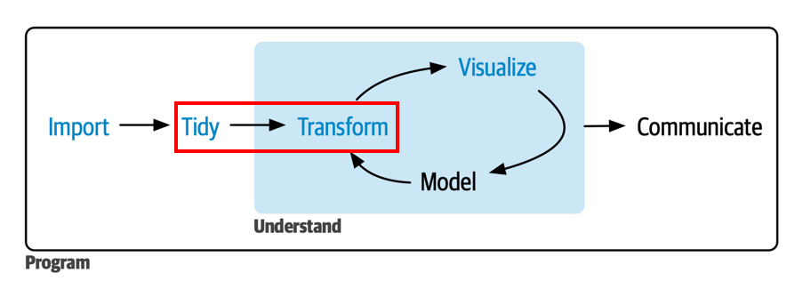

library(tidyverse)
library(readxl)
library(janitor)
pobreza_2024 <- read_excel("data/SAE_ingresos_2024.xlsx",
range = "A3:J348") |>
clean_names()
poblacion_2024 <- read_excel(
"data/D1_Poblacion-censada-por-sexo-y-edad-en-grupos-quinquenales.xlsx",
sheet = "2", skip = 3, n_max = 347) |>
clean_names()
datos <- left_join(pobreza_2024, poblacion_2024,
join_by(codigo == codigo_comuna))Clase 2: Transformar y Manipular Datos
Análisis de Datos y Estadística Computacional
Prof. Gabriel Duarte Zúñiga
Universidad Adolfo Ibáñez | DIAPP-2026
13 de junio de 2026
¡Bienvenid@s a la Clase 2!
Resumen Clase 1
| Función | Paquete | ¿Para qué sirve? |
|---|---|---|
read_csv() / read_csv2()
|
readr | Importar archivos .csv (separados por , o ;) |
read_excel() |
readxl | Importar archivos Excel (.xlsx / .xls) |
read_dta() |
haven | Importar archivos de STATA (.dta) |
st_read() |
sf | Importar archivos espaciales (.shp) |
read_parquet() |
arrow | Importar archivos Parquet |
clean_names() |
janitor | Estandarizar nombres de columnas |
left_join() |
dplyr | Cruzar dos tablas por una llave |
Resolución Ejercicio Grupal
El ejercicio pedía construir un dataset con la población censada y la tasa de pobreza para las 345 comunas del país:
Nuestro dataset de trabajo
A lo largo de esta clase usaremos el dataset datos construido en la Clase 1 (345 comunas con datos de pobreza y población):
Rows: 345
Columns: 19
$ codigo <dbl> 1101, …
$ region_x <chr> "Tarap…
$ nombre_comuna <chr> "Iquiq…
$ numero_de_personas_segun_proyecciones_de_poblacion <dbl> 232455…
$ numero_de_personas_en_situacion_de_pobreza_de_ingresos <dbl> 37598.…
$ porcentaje_de_personas_en_situacion_de_pobreza_de_ingresos_2024 <dbl> 0.1617…
$ limite_inferior <dbl> 0.1478…
$ limite_superior <dbl> 0.1756…
$ presencia_de_la_comuna_en_la_muestra_casen <chr> "Sí", …
$ tipo_de_estimacion_sae <chr> "Direc…
$ codigo_region <dbl> 1, 1, …
$ region_y <chr> "Tarap…
$ codigo_provincia <dbl> 11, 11…
$ provincia <chr> "Iquiq…
$ comuna <chr> "Iquiq…
$ poblacion_censada <dbl> 199587…
$ hombres <dbl> 98413,…
$ mujeres <dbl> 101174…
$ razon_hombre_mujer <dbl> 97.3, …¿Qué veremos hoy?

Transformar y Manipular
Objetivo Clase 2
En esta segunda clase aprenderemos a transformar y manipular bases de datos utilizando los verbos del paquete dplyr y herramientas de tidyr.
Como objetivos específicos se busca:
- Reestructurar datos con
bind_rows(),pivot_longer()ypivot_wider() - Ordenar filas con
arrange(), filtrarlas confilter()yfilter_out(), y extraer subconjuntos con la familiaslice() - Seleccionar, reubicar, renombrar y crear variables con
select(),relocate(),rename()ymutate() - Crear variables condicionales con
if_else(),case_when()y las nuevas funcionesrecode_values()yreplace_when() - Resumir estadísticas por grupos con
group_by()+summarise()ycount() - Manejar datos especiales: texto, fechas y factores
Reestructurar Datos
Pegar filas: bind_rows()
-
bind_rows()permite apilar dos o más tablas que tienen las mismas columnas (o al menos las mismas variables de interés):
norte <- tibble(region = c("Arica y Parinacota", "Tarapacá", "Antofagasta"),
comunas = c(4, 7, 9))
sur <- tibble(region = c("Araucanía", "Los Ríos", "Los Lagos"),
comunas = c(32, 12, 30))
bind_rows(norte, sur)# A tibble: 6 × 2
region comunas
<chr> <dbl>
1 Arica y Parinacota 4
2 Tarapacá 7
3 Antofagasta 9
4 Araucanía 32
5 Los Ríos 12
6 Los Lagos 30Tip
A diferencia de left_join() (que pega columnas), bind_rows() pega filas: piénsenlo como apilar planillas una debajo de otra. Si las columnas no coinciden exactamente, bind_rows() rellena con NA.
Tidy data
Los datos están en formato tidy cuando:
- cada variable está en su propia columna,
- cada observación está en su propia fila, y
- cada valor está en su propia celda.

Alargar el df: pivot_longer()
Cuando los nombres de columna son en realidad valores de una variable, necesitamos alargar la tabla. Esto lo podemos hacer mediante la función pivot_longer() para ordenar verticalmente o sumarle filas a nuestro dataset. Los argumentos principales requeridos son:
-
cols = "vars"Las columnas (variables) a pivotear. -
names_to = "x"para indicar el nombre de la variable a donde irán las columnas pivote en 1. -
values_to = "y"para indicar el nombre de la columna que almacenará los valores que contenían las antiguas columnas pivote.
Ejemplo: pivot_longer()
# A tibble: 3 × 3
country `1999` `2000`
<chr> <dbl> <dbl>
1 Afghanistan 745 2666
2 Brazil 37737 80488
3 China 212258 213766Ensanchar el df: pivot_wider()
Cuando una misma observación está repartida en varias filas, necesitamos ensanchar la tabla o agregarle columnas. Los argumentos principales requeridos son:
-
names_from = "x"que indica dónde se almacenan los nombres de las nuevas columnas que se generarán a partir del ensanchamiento. -
values_from = "y"que indica desde dónde se obtendrán los valores que tomaran las observaciones de las nuevas columnas.
# A tibble: 6 × 4
country year cases population
<chr> <dbl> <dbl> <dbl>
1 Afghanistan 1999 745 19987071
2 Afghanistan 2000 2666 20595360
3 Brazil 1999 37737 172006362
4 Brazil 2000 80488 174504898
5 China 1999 212258 1272915272
6 China 2000 213766 1280428583Tipos de variables con glimpse()
- Recordar que
glimpse()muestra la clase de cada columna y algunas observaciones. Las abreviaciones más comunes son:
| Abreviación | Clase | Ejemplo |
|---|---|---|
<int> |
Número entero (integer) | 1, 2, 3 |
<dbl> |
Número real (double) | 3.14, 0.05 |
<chr> |
Texto (character) | "Santiago" |
<fct> |
Factor (categórico) | Norte, Centro, Sur |
<date> |
Fecha | 2026-06-16 |
<dttm> |
Fecha y hora (datetime) | 2026-06-16 09:00 |
Transformar Datos con dplyr
Consideraciones básicas
Las funciones de dplyr comparten estas características:
- El primer argumento es un dataframe.
- Los argumentos siguientes indican sobre qué variable operar (generalmente sin comillas).
- El resultado siempre es un dataframe.
- Se organizan en 3 grandes grupos:
-
Filas:
arrange(),filter(),filter_out(),slice() -
Columnas:
select(),relocate(),rename(),mutate() -
Grupos:
group_by()+summarise(),count()
-
Filas:
Filas
Ordenar: arrange()
-
arrange()ordena las filas de un dataframe por los valores de una o más columnas. - Por defecto ordena de forma ascendente. Para ordenar de manera descendente se usa
desc()o un-antes de la variable numérica.
datos |>
arrange(desc(poblacion_censada)) |>
select(nombre_comuna, region_x, poblacion_censada) |>
head(5)# A tibble: 5 × 3
nombre_comuna region_x poblacion_censada
<chr> <chr> <dbl>
1 Puente Alto Metropolitana 568086
2 Maipú Metropolitana 503635
3 Santiago Metropolitana 438856
4 Antofagasta Antofagasta 401096
5 La Florida Metropolitana 374836Filtrar filas: filter()
-
filter()conserva las filas que cumplen todas las condiciones indicadas. Las condiciones se separan por coma (equivale a&).
datos |>
filter(region_x == "Metropolitana",
poblacion_censada > 200000) |>
select(nombre_comuna, poblacion_censada)# A tibble: 10 × 2
nombre_comuna poblacion_censada
<chr> <dbl>
1 Santiago 438856
2 La Florida 374836
3 Las Condes 296134
4 Maipú 503635
5 Ñuñoa 241467
6 Peñalolén 236478
7 Pudahuel 227820
8 Quilicura 205624
9 Puente Alto 568086
10 San Bernardo 306371Filtrar filas: filter()
Operadores y funciones útiles para filter():
| Operador / Función | Descripción | Ejemplo |
|---|---|---|
==, !=
|
Igual / Distinto | region_x == "Biobío" |
>, >=, <, <=
|
Comparaciones | poblacion_censada > 50000 |
%in% |
Pertenece a un conjunto | region_x %in% c("Biobío", "Ñuble") |
between(x, a, b) |
Rango cerrado | between(poblacion_censada, 10000, 50000) |
is.na(x) |
Es valor faltante | filter(!is.na(poblacion_censada)) |
Errores típicos al usar filter()
Error 2: no repetir el nombre de la variable cuando se hacen condiciones adicionales (por ejemplo, con |)
Errores típicos al usar filter()
# A tibble: 3 × 19
codigo region_x nombre_comuna numero_de_personas_se…¹ numero_de_personas_e…²
<dbl> <chr> <chr> <dbl> <dbl>
1 3101 Atacama Copiapó 176447 29286.
2 3102 Atacama Caldera 19985 4417.
3 3103 Atacama Tierra Amarilla 14434 3405.
# ℹ abbreviated names: ¹numero_de_personas_segun_proyecciones_de_poblacion,
# ²numero_de_personas_en_situacion_de_pobreza_de_ingresos
# ℹ 14 more variables:
# porcentaje_de_personas_en_situacion_de_pobreza_de_ingresos_2024 <dbl>,
# limite_inferior <dbl>, limite_superior <dbl>,
# presencia_de_la_comuna_en_la_muestra_casen <chr>,
# tipo_de_estimacion_sae <chr>, codigo_region <dbl>, region_y <chr>, …Excluir filas: filter_out()
Novedad de dplyr 1.2.0:
filter_out()es el complemento defilter(). Mientrasfilter()conserva las filas que cumplen la condición,filter_out()las descarta.La diferencia clave está en cómo tratan los
NA:filter()los descarta, perofilter_out()los conserva:
filter() vs filter_out()
filter() → para conservar filas
- Trata
NAcomoFALSE→ los descarta. - Ideal cuando la intención es “quedarse con las filas que cumplan X”.
Tip
Regla simple: si estás usando filter() con != o ! y además necesitas agregar | is.na(...), probablemente filter_out() sea más claro y directo.
🧠 Pregunta N° 1
Tenemos un dataset de comunas donde la variable tasa_pobreza tiene algunos valores NA. Queremos eliminar las comunas con tasa de pobreza superior al 30%, pero sin perder las comunas con NA.
¿Cuál es la mejor opción?
filter(tasa_pobreza <= 0.30)filter(tasa_pobreza <= 0.30 | is.na(tasa_pobreza))filter_out(tasa_pobreza > 0.30)filter_out(tasa_pobreza <= 0.30)
Extraer filas: familia slice()
slice() selecciona filas por posición. Sus variantes más útiles son:
| Función | Descripción |
|---|---|
slice_head(n = 5) |
Primeras 5 filas |
slice_max(x, n = 5) |
5 filas con mayor valor de x
|
slice_min(x, n = 5) |
5 filas con menor valor de x
|
slice_sample(n = 5) |
5 filas al azar |
slice() combinado con group_by()
Podemos obtener las comunas más pobladas por región:
datos |>
group_by(region_x) |>
slice_max(poblacion_censada, n = 1) |>
ungroup() |>
select(region_x, nombre_comuna, poblacion_censada) |>
head(5)# A tibble: 5 × 3
region_x nombre_comuna poblacion_censada
<chr> <chr> <dbl>
1 Antofagasta Antofagasta 401096
2 Arica y Parinacota Arica 241653
3 Atacama Copiapó 168831
4 Aysén Coyhaique 57823
5 Biobío Concepción 230375💻 Practiquemos: filtrar y ordenar
Usando el dataset gapminder, primero resuma la estructura del dataset con glimpse() y luego encuentre los 3 países del continente (continent) Americas con mayor esperanza de vida (lifeExp) en el año 2007.
Columnas
Seleccionar: select()
-
select()conserva solo las columnas indicadas. Acepta funciones auxiliares (helpers) para seleccionar por patrón:
| Helper | Descripción | Ejemplo |
|---|---|---|
starts_with("x") |
Comienza con "x"
|
starts_with("codigo") |
ends_with("x") |
Termina con "x"
|
ends_with("comuna") |
contains("x") |
Contiene "x"
|
contains("pobreza") |
where(is.numeric) |
Por tipo de variable | where(is.character) |
Reubicar y renombrar
relocate() — cambiar posición de columnas
rename() — cambiar nombre de columnas con la sintaxis de: nuevo_nombre = nombre_actual
datos |>
dplyr::select(region_x, nombre_comuna, poblacion_censada, porcentaje_de_personas_en_situacion_de_pobreza_de_ingresos_2024) |>
dplyr::rename(
region = region_x,
comuna = nombre_comuna,
pob_2024 = poblacion_censada,
tasa_pobreza = porcentaje_de_personas_en_situacion_de_pobreza_de_ingresos_2024
) |>
head(5)# A tibble: 5 × 4
region comuna pob_2024 tasa_pobreza
<chr> <chr> <dbl> <dbl>
1 Tarapacá Iquique 199587 0.162
2 Tarapacá Alto Hospicio 142086 0.268
3 Tarapacá Pozo Almonte 16878 0.211
4 Tarapacá Camiña 1335 0.437
5 Tarapacá Colchane 790 0.510Crear variables: mutate()
-
mutate()crea nuevas columnas o modifica existentes:
datos |>
mutate(
pob_miles = round(poblacion_censada / 1000, 1),
prop_hombres = round(hombres / poblacion_censada, 3)
) |>
select(nombre_comuna, pob_miles, prop_hombres) |>
head(4)# A tibble: 4 × 3
nombre_comuna pob_miles prop_hombres
<chr> <dbl> <dbl>
1 Iquique 200. 0.493
2 Alto Hospicio 142. 0.497
3 Pozo Almonte 16.9 0.514
4 Camiña 1.3 0.485Aplicar funciones a múltiples columnas: across()
-
across()permite aplicar una misma función a varias columnas a la vez, usando los mismos helpers deselect():
Tip
across() se usa dentro de mutate() o summarise(). Es especialmente útil cuando necesitas aplicar la misma transformación a muchas columnas: across(where(is.numeric), \(x) round(x, 2)).
Condiciones binarias: if_else()
-
if_else()evalúa una condición y asigna un valor paraTRUEy otro paraFALSE:
datos |>
mutate(
tamano = if_else(poblacion_censada > 100000,
"Grande", "Pequeña")
) |>
select(nombre_comuna, poblacion_censada, tamano) |>
head(4)# A tibble: 4 × 3
nombre_comuna poblacion_censada tamano
<chr> <dbl> <chr>
1 Iquique 199587 Grande
2 Alto Hospicio 142086 Grande
3 Pozo Almonte 16878 Pequeña
4 Camiña 1335 PequeñaTip
if_else() es la opción correcta cuando hay exactamente dos categorías. Para más categorías, usar case_when().
Múltiples condiciones: case_when()
-
case_when()evalúa condiciones en orden y asigna el valor de la primera que se cumple:
datos |>
mutate(
tamano = case_when(
poblacion_censada > 200000 ~ "Metrópoli",
poblacion_censada > 50000 ~ "Ciudad grande",
poblacion_censada > 10000 ~ "Ciudad mediana",
.default = "Pueblo"
)
) |>
count(tamano)# A tibble: 4 × 2
tamano n
<chr> <int>
1 Ciudad grande 68
2 Ciudad mediana 165
3 Metrópoli 22
4 Pueblo 90Recodificar: recode_values()
-
Novedad de dplyr 1.2.0: cuando la recodificación es un mapeo directo de valores (como una tabla de búsqueda),
recode_values()es más limpio quecase_when():
# Con case_when (verboso)
datos |>
mutate(zona = case_when(
codigo_region == 15 ~ "Norte",
codigo_region == 1 ~ "Norte",
codigo_region == 13 ~ "Centro",
.default = "Otro"
))
# Con recode_values (más directo, usando tabla de búsqueda)
lookup <- tribble(
~from, ~to,
15, "Norte",
1, "Norte",
13, "Centro"
)
datos |>
mutate(zona = recode_values(codigo_region,
from = lookup$from,
to = lookup$to,
default = "Otro"))Reemplazar parcialmente: replace_when()
-
replace_when()es para modificar solo algunos valores de una columna existente, manteniendo el resto intacto:
Tip
La diferencia con case_when() es que replace_when() no necesita un .default: los valores que no cumplen la condición simplemente se mantienen como están. Esto es más seguro cuando solo quieres tocar algunas filas.
🧠 Pregunta N° 2
Queremos crear una nueva variable zona que clasifique las comunas según la región: Norte (regiones 1 a 4 y 15), Centro (5 y 13) y Sur (el resto). ¿Cuál es el mejor enfoque?
¿Qué función usarías?
if_else()case_when()recode_values()replace_when()
💻 Practiquemos: crear y transformar
Usando gapminder, filtre el año 2007 y cree una variable nivel_desarrollo que clasifique los países según su PIB per cápita: “Alto” si supera los 20.000, “Medio” entre 5.000 y 20.000, y “Bajo” en caso contrario. Luego cuente cuántos países hay en cada nivel.
Agrupamiento
group_by() + summarise()
-
group_by()prepara el dataframe para realizar operaciones por grupo. No cambia los datos por sí solo. -
summarise()calcula estadísticas de resumen para cada grupo:
datos |>
group_by(region_x) |>
summarise(
n_comunas = n(),
pob_total = sum(poblacion_censada),
pob_media = round(mean(poblacion_censada))
) |>
ungroup() |>
slice_max(pob_total, n = 5)# A tibble: 5 × 4
region_x n_comunas pob_total pob_media
<chr> <int> <dbl> <dbl>
1 Metropolitana 52 7400741 142322
2 Valparaíso 38 1896053 49896
3 Biobío 33 1613059 48881
4 Maule 30 1123008 37434
5 La Araucanía 32 1010423 31576
group_by() + summarise(): precauciones
Algunas consideraciones importantes:
-
group_by()prepara el dataframe pero no lo modifica visualmente. -
summarise()reduce el dataframe a una fila por grupo. - Si se desea seguir manipulando el resultado sin agrupación, siempre encadenar
ungroup()al final. De lo contrario, las operaciones posteriores seguirán una lógica agrupada. - Es posible agrupar por más de una variable:
Contar: count()
-
count()es un atajo paragroup_by() |> summarise(n = n()):
Contar: count()
- Con el argumento
wtpodemos sumar una variable en vez de contar filas:
Ejercicio Grupal (30-40 min)
Trabajarán en salas pequeñas usando el dataset pobreza_pob_censo_2024.xlsx y otros datos homicidios. Los detalles están en la Guía de Ejercicio Grupal N° 2 disponible en Webcursos.
Recuerden
- Designen a una persona que comparta pantalla.
- Intenten resolver primero y luego revisen la pauta.
- El profesor y ayudante pasarán por las salas.
Datos Especiales
Texto
Extraer partes de texto: str_sub()
-
str_sub()del paquetestringrpermite extraer una porción de una cadena de texto según sus posiciones:
- Argumentos:
str_sub(string, start, end). Las posiciones son inclusivas (1-indexed).
Aplicación: extraer períodos desde texto
Un caso muy frecuente en datos públicos: variables que codifican trimestre y año juntos. Notar que también se pueden usar posiciones negativas anteponiendo un menos al segundo argumento para contar desde el final de la cadena. Por ejemplo str_sub(periodo, -2) extrae los últimos 2 caracteres:
trimestres <- tibble(
periodo = c("tr1_2023", "tr2_2023", "tr3_2023", "tr4_2023"),
ventas = c(1500, 2000, 3500, 1750)
)
trimestres |>
mutate(
trimestre = str_sub(periodo, 3, 3),
anio = str_sub(periodo, -4)
)# A tibble: 4 × 4
periodo ventas trimestre anio
<chr> <dbl> <chr> <chr>
1 tr1_2023 1500 1 2023
2 tr2_2023 2000 2 2023
3 tr3_2023 3500 3 2023
4 tr4_2023 1750 4 2023 Fechas
Fechas con lubridate
- El paquete
lubridate(parte deltidyverse) facilita el manejo de fechas. Las funcionesymd(),dmy(),mdy()convierten texto a fecha según el orden de los componentes:
Tip
La norma ISO 8601 ordena las fechas de mayor a menor: AAAA-MM-DD. Usar ymd() cuando los datos siguen este formato, dmy() cuando están en formato chileno (día/mes/año).
Extraer componentes de una fecha
Una vez que la variable es de clase <date>, podemos extraer sus partes:
fechas <- tibble(
fecha = ymd(c("2026-01-15", "2026-06-22", "2026-12-01"))
)
fechas |>
mutate(
anio = year(fecha),
mes = month(fecha, label = TRUE),
dia = day(fecha),
dia_semana = wday(fecha, label = TRUE)
)# A tibble: 3 × 5
fecha anio mes dia dia_semana
<date> <dbl> <ord> <int> <ord>
1 2026-01-15 2026 ene 15 jue
2 2026-06-22 2026 jun 22 lun
3 2026-12-01 2026 dic 1 mar Convertir texto a fecha: as_date()
- Cuando las fechas están almacenadas como texto (clase
<chr>), debemos convertirlas conas_date()o las funcionesymd()/dmy():
Calcular intervalos de tiempo
- Para calcular la diferencia entre dos fechas:
🧠 Pregunta N° 3
Tenemos una variable fecha_texto con valores como "15/06/2026" (en formato día/mes/año, típico en Chile). ¿Cómo la convertimos correctamente a fecha?
¿Cuál es la función correcta?
ymd("15/06/2026")dmy("15/06/2026")mdy("15/06/2026")as_date("15/06/2026")
Factores
Variables categóricas: factor()
- Un factor es una estructura de datos para representar variables categóricas con un número finito de niveles:
- Por defecto los niveles se ordenan alfabéticamente. Podemos especificar el orden con
levels:
Reordenar niveles: fct_relevel()
-
fct_relevel()del paqueteforcatspermite reordenar los niveles de un factor ya creado:
Tip
fct_relevel() es especialmente útil cuando queremos controlar el orden de las categorías en los gráficos de ggplot2 (Clase 3).
💻 Practiquemos: factores
Usando gapminder (año 2007), clasifique los países según su esperanza de vida en una variable numérica en función de un umbral de 70 años de edad (1 = alta (mayor igual a 70), 0 = baja (menor que 70)) y luego haga un recuento usando un factor con las etiquetas designadas (alta y baja).
Recapitulación
¿Qué aprendimos hoy?
| Grupo | Funciones |
|---|---|
| Reestructurar |
bind_rows(), pivot_longer(), pivot_wider()
|
| Filas |
arrange(), filter(), filter_out(), slice_max/min/sample()
|
| Columnas |
select(), relocate(), rename(), mutate(), across()
|
| Condicionales |
if_else(), case_when(), recode_values(), replace_when()
|
| Grupos |
group_by() + summarise(), count()
|
| Texto | str_sub() |
| Fechas |
ymd(), dmy(), as_date(), year(), month(), interval()
|
| Factores |
factor(), fct_relevel()
|
La próxima clase aprenderemos a visualizar estos datos con ggplot2 para comunicar patrones y resultados.